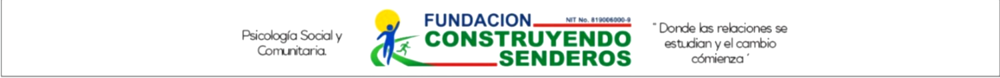
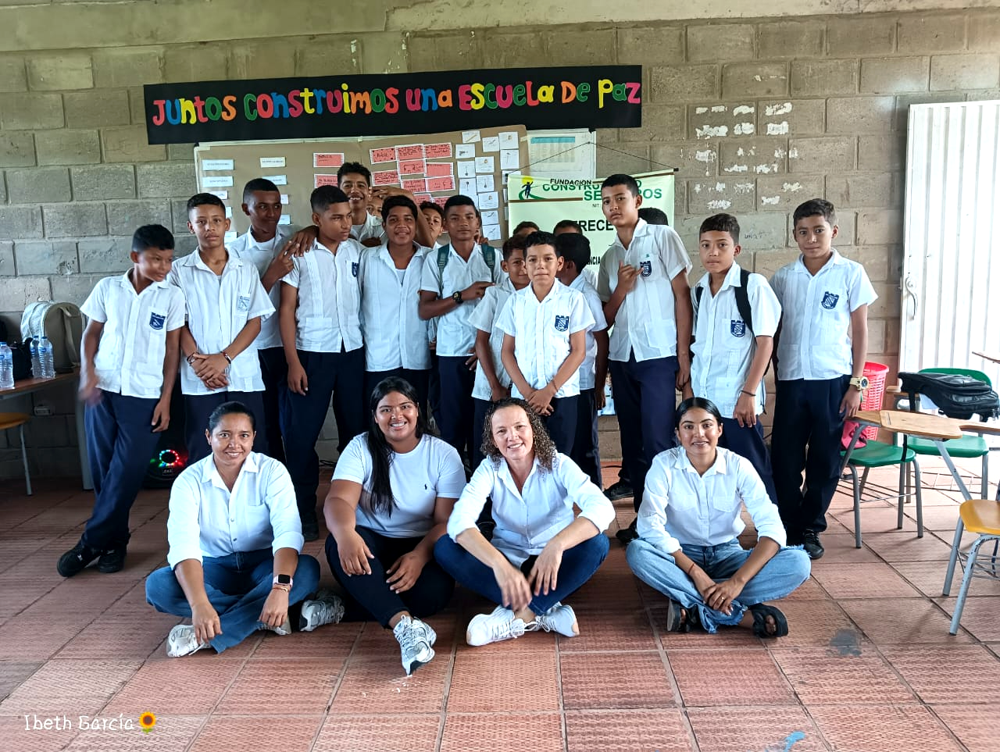
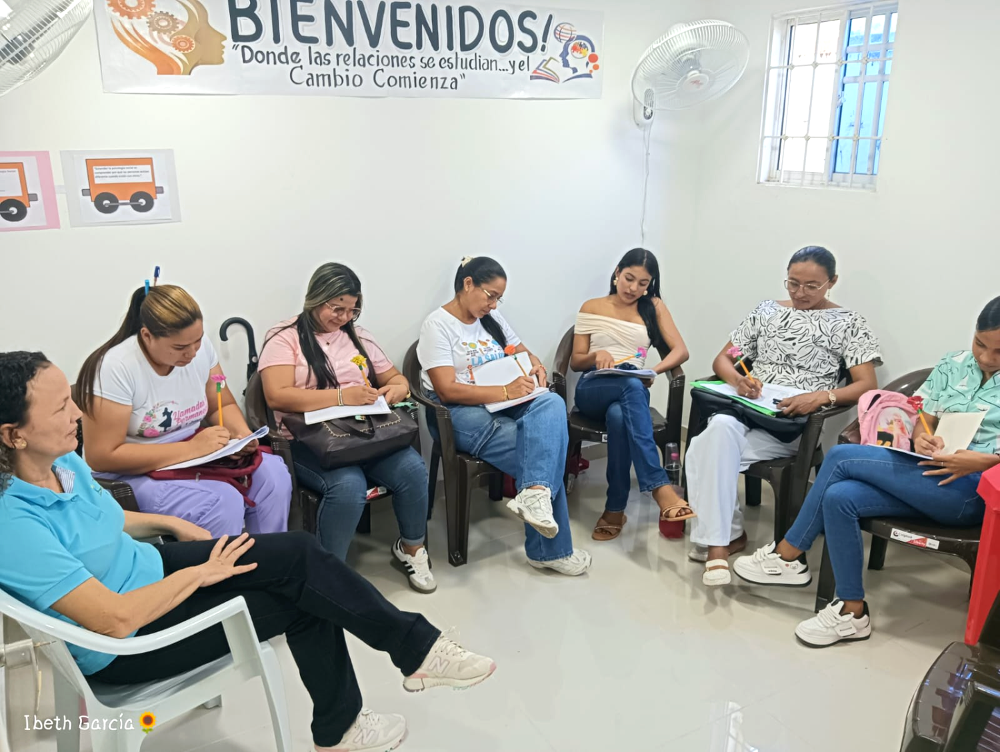
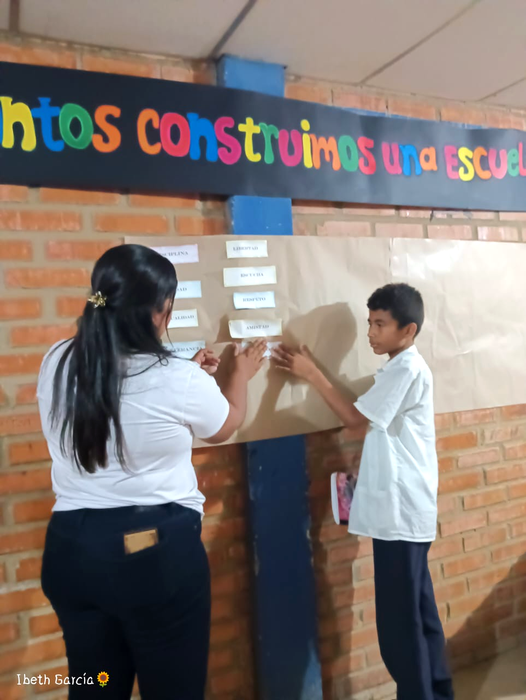
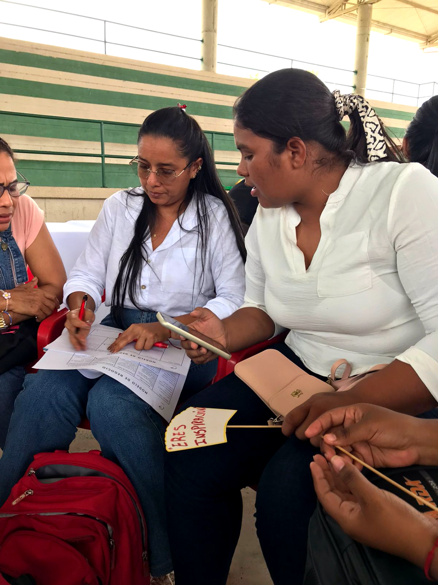
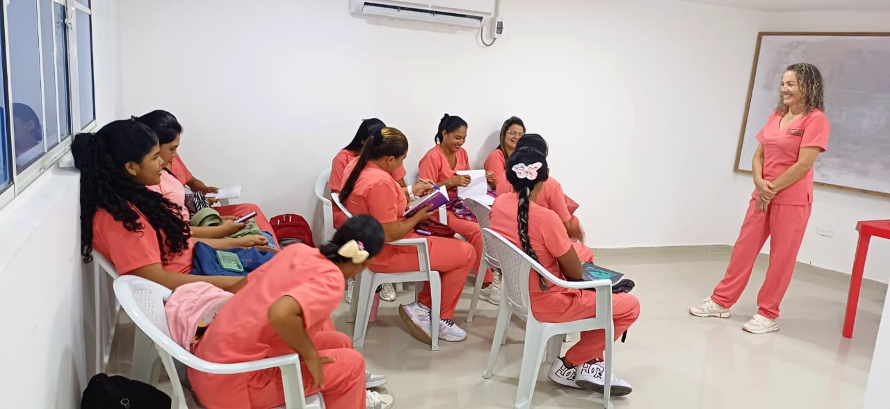
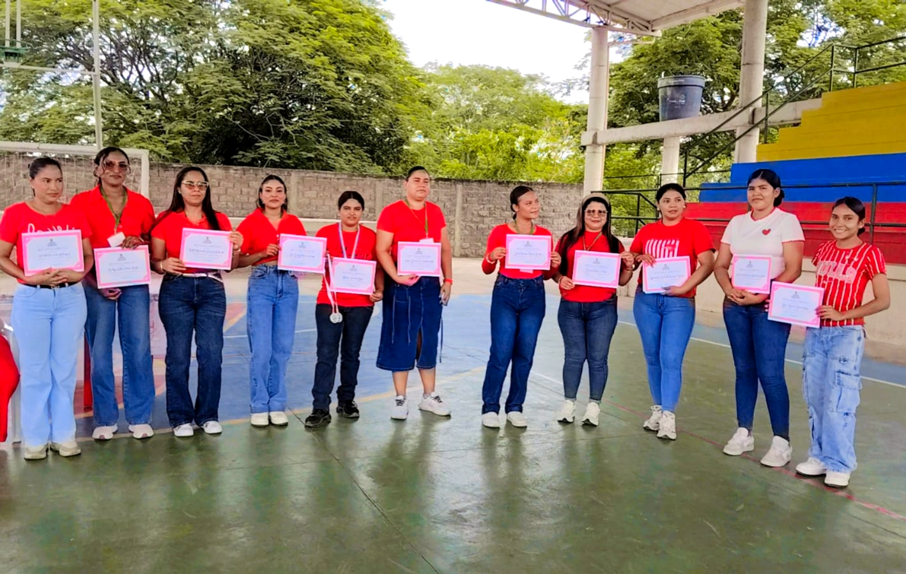
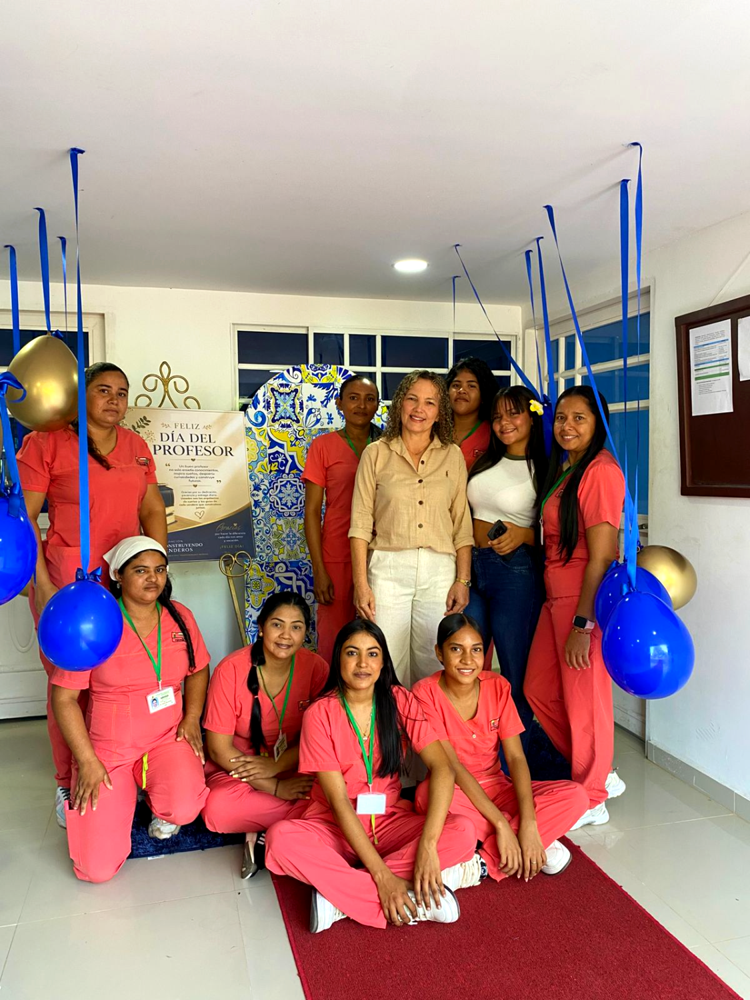

Orientación honesta sobre cada programa técnico laboral y preinscripción en el mismo lugar. Sin promesas infladas: te contamos exactamente qué puedes hacer con tu título.

“La formación para el trabajo debe brindar conocimientos útiles, herramientas prácticas y competencias que respondan a las necesidades reales.”
Bases de la psicología social y dinámicas comunitarias.
Procesos sociales, educativos y de prevención en territorio.
Promoción activa del bienestar y fortalecimiento comunitario.
Formación laboral eminentemente práctica y de corta duración. NO busca formar profesionales universitarios, sino personal operativo idóneo.
Desarrollo de competencias específicas relacionadas con el campo ocupacional social.
Certificado de Técnico Laboral por Competencias debidamente registrado en Colombia, que habilita al egresado para el desempeño inmediato.
Toca cada mito para ver la realidad. No vendemos el título de psicólogo: ofrecemos formación técnica de apoyo, ética y transparente.



Zonas de protección comunitaria
El egresado no debe, bajo ninguna circunstancia, presentarse como psicólogo ni utilizar títulos que no posee.
Prohibido realizar funciones exclusivas de la psicología que exijan habilitación o tarjeta profesional.
Cero tolerancia al diagnóstico clínico autónomo o a las terapias psicológicas.
Cuando una situación requiera atención especializada, el protocolo exige remisión inmediata al profesional.
Conocer los límites no restringe la formación: la hace responsable, ética y transparente.
El auxiliar acompaña y apoya la estrategia social; no reemplaza al profesional.
Toca cada paso del ciclo para ver su alcance
Psicología social y comunitaria, procesos de interacción, convivencia y dinámicas grupales.
Observación, reconocimiento de situaciones sociales y caracterización de necesidades comunitarias.
Prevención y promoción, diseño de actividades educativas, resolución pacífica de conflictos y logística.
Comunicación asertiva, responsabilidad moral y reconocimiento experto de rutas de apoyo institucional.
Ejecución operativa de programas para poblaciones vulnerables.
Promoción y fortalecimiento local.
Apoyo logístico en talleres, campañas y sensibilización.
Acompañamiento en procesos de integración ciudadana.
Asistencia en proyectos bajo los lineamientos de sus competencias técnicas.
Nota de transparencia profesional: el desempeño en estas áreas siempre dependerá de los requisitos específicos de cada empleador o entidad convocante, así como de la experiencia y competencias particulares del egresado. La formación técnica no garantiza de forma automática un empleo: dota al estudiante de herramientas idóneas para competir en el sector.
Estudiantes en práctica abordan a Doña Rosa, una trabajadora informal en las vías, para mitigar sus riesgos laborales y emocionales.
Exposición extrema al sol (“el sol apremia, la maltrata”), agotamiento físico severo y herramientas inadecuadas.
Aislamiento extremo, fatiga emocional y carga familiar inmensa como madre soltera de siete hijos dependientes.
Kit de protección (camisa manga larga con cintas reflectivas, guantes, lentes, tenis de descanso, protector solar), hidratación y merienda para mitigar el agotamiento inmediato.
Escucha activa, articulación de redes con la Casa de la Cultura y acompañamiento estrictamente dentro de los límites del auxiliar, sin intentar terapia clínica.


Formación con docentes certificados e idóneos, prácticas con aliados del sector productivo y validación del bachillerato para jóvenes y adultos.
Sí. Otorga un Certificado de Técnico Laboral por Competencias debidamente registrado para funciones de apoyo, sin conferir habilitación clínica.
El programa capacita rigurosamente en la remisión ética y oportuna a profesionales. El auxiliar actúa como puente de apoyo, nunca como terapeuta.
Toca cada círculo · en el centro, acompañamiento comunitario responsable
{{ vennDesc }}
La educación no debe construirse sobre rumores, sino sobre información clara. No vendemos el título de psicólogo: ofrecemos formación técnica de alta calidad, responsable, ética y transparente.
Formulario liviano: funciona con datos móviles limitados y puedes guardar el progreso. Un docente te contacta para confirmar el programa y los documentos.

Te esperamos en el stand de FUCONS. Lleva tu documento de identidad y, si la tienes, copia del diploma o certificado de estudios.
Al enviar aceptas el tratamiento de datos conforme a la política de la fundación. Demostración: los datos no se envían a ningún servidor.